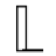

n
neoSVGГенерация изображений
«neoSVG» готовит текстовый черновик по условиям задачи.
Раздел «Текст → изображение»: варианты ИИ для этой задачи, описания возможностей и переходы к обзорам. Сравните несколько решений на одинаковом примере.
Создайте обложку для заметки о выращивании зелени на балконе, описав нужный сюжет. Укажите основные растения, ракурс и свободное место под название; после генерации проверьте, различимы ли крупные детали в небольшом превью.
Нарисуй обложку заметки о зелени на балконе: ящики с базиликом, мятой и петрушкой, вид немного сверху. Светлая палитра, свободная область сверху для заголовка, без надписей.

«neoSVG» готовит текстовый черновик по условиям задачи.
Для «NeutronField» сначала определите свою задачу и требуемый результат. Карточка относится к направлению «Генерация изображений».
«Night Café» готовит визуальные материалы по заданию.
«niia AI» представлен в разделе «E-commerce». При выборе проверьте нужную операцию и условия работы с результатом.
Pixela AI создаёт игровые текстуры с использованием диффузионных алгоритмов. Пользователь может загружать собственные изображения для подготовки новых вариантов. Обмен текстурами с сообществом дополняет генерацию, связывая исходный визуальный материал и его дальнейшее использование при работе автора над графическими ресурсами игры.
Сравнивать «PONS AI» с другими инструментами раздела «Генерация изображений» удобнее на одинаковом исходном материале.

ReimagineHome используют, чтобы искать решения для пространства. Ещё одно направление работы: менять фотографии с учётом выбранного оформления.
Сравнивать «Tattoos AI (tattoosai.com)» с другими инструментами раздела «Генерация изображений» удобнее на одинаковом исходном материале.
«Varys AI» помогает представить оформление помещения.
Venngage помогает готовить открытки ко Дню святого Валентина с участием ИИ. Пользователь выбирает шаблон и меняет оформление под адресата: партнёра или друга. Конструктор поддерживает подбор романтического либо юмористического замысла и дальнейшую настройку дизайна выбранной открытки.
Для «Xno AI» сначала определите свою задачу и требуемый результат. Карточка относится к направлению «Генерация изображений».

YesChat.ai используют, чтобы готовить музыкальную композицию по заданию. Ещё одно направление работы: собирать видеосцену по описанию или визуальному исходнику.
«AI GENIUS» готовит визуальные материалы по заданию.
«AIimages» готовит текстовый черновик по условиям задачи.
«Amazing AI» готовит текстовый черновик по условиям задачи.

«Apeture (by Lexica)» готовит визуальные материалы по заданию.
Сравнивать «Astra AI (dan.com)» с другими инструментами раздела «Генерация изображений» удобнее на одинаковом исходном материале.
banruoai.cn объединяет генерацию текста с созданием и редактированием изображений. Для письменных задач используется языковая модель, а визуальное направление включает картинки по словесному описанию и повышение чёткости. Продукт охватывает несколько форматов контента, сочетая работу над формулировками с подготовкой или доработкой изображения.
«BasedLabs AI» готовит визуальные материалы по заданию. «BasedLabs AI» создаёт видеоматериал по заданию.
«Blackink AI» представлен в разделе «Генерация изображений». При выборе проверьте нужную операцию и условия работы с результатом.
«BrandCrowd» подготавливает варианты логотипов.

Brandmark помогает рассматривать варианты знака и оформления бренда. Итоговый логотип нужно выбирать с учётом читаемости, назначения и прав на используемые элементы.
«Disney AI Poster» готовит визуальные материалы по заданию.
«Go Charlie» готовит визуальные материалы по заданию.
«IconikAI» готовит варианты значков для приложения.
«IP Adapter FaceID» готовит визуальные материалы по заданию.
«Journey+ (journeyplus.ai)» готовит визуальные материалы по заданию.
Сравнивать «Lensco» с другими инструментами раздела «Генерация изображений» удобнее на одинаковом исходном материале.

Leonardo.Ai помогает создавать, редактировать и анимировать изображения. Полезен для визуальных концепций, персонажей и материалов, которые затем доводят до рабочего макета.
«MemeCam» представлен в разделе «Генерация изображений». При выборе проверьте нужную операцию и условия работы с результатом.

Midjourney создаёт изображения по описанию и референсам. Подходит для поиска художественного направления, иллюстраций и визуальных концепций перед детальной доработкой.

Novita AI относится к инструментам, которые помогают писать и изменять программный код. Ещё одно направление работы: связывать действия в автоматизированный процесс.
Paint Potion создаёт векторные иллюстрации по описанию пользователя с участием ИИ. Изображения можно уточнять, а при сохранении доступны настройки экспорта. Продукт ориентирован на веб-агентства и творческих авторов, которым нужен согласованный визуальный материал для дальнейшей работы над оформлением проекта.
«Pfpmaker» готовит визуальные материалы по заданию. Дополнительно «Pfpmaker» работает с материалами для социальных площадок.
Для «Pitchyouridea» сначала определите свою задачу и требуемый результат. Карточка относится к направлению «Генерация изображений».

Scenario предлагает генеративную работу с материалами для визуального проекта. Полученные элементы нужно проверять на совместимость с остальным содержанием и средствами разработки.
«Silic» представлен в разделе «Дизайн». При выборе проверьте нужную операцию и условия работы с результатом.
«SoraPix AI» готовит визуальные материалы по заданию.
Сравнивать «Thisflagdoesnotexist» с другими инструментами раздела «Генерация изображений» удобнее на одинаковом исходном материале.
«Thisponydoesnotexist» готовит визуальные материалы по заданию.
«Versy AI» помогает соединить повторяемые рабочие действия.
«AI ICON Online» представлен в разделе «Генерация изображений». При выборе проверьте нужную операцию и условия работы с результатом.
«Baseten» готовит визуальные материалы по заданию.
ChartPixel подготавливает диаграммы и аналитические пояснения из файлов данных либо веб-страниц. Обработка включает очистку материала и создание дополнительных признаков. ИИ также помогает с аннотациями и статистическим разбором, позволяя рассматривать обнаруженные особенности набора данных в наглядном виде.
Comicai помогает готовить комиксы с персонажами, фонами и композицией отдельных панелей. В описании продукта выделены использование изображений как ориентиров и согласование внешности между сценами. Для одной последовательности проверьте узнаваемость героев, расположение двух персонажей и то, как соседние кадры передают действие без дополнительных пояснений.
«DesignAi» помогает представить оформление помещения.
«Devoid AI» готовит визуальные материалы по заданию.
«Distillery» готовит текстовый черновик по условиям задачи.
Страница 7 из 9